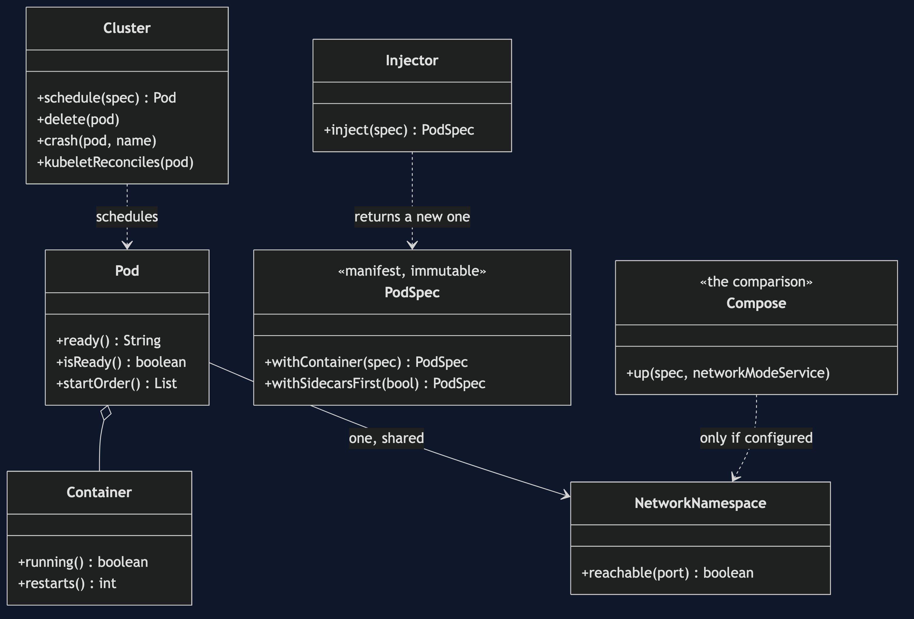
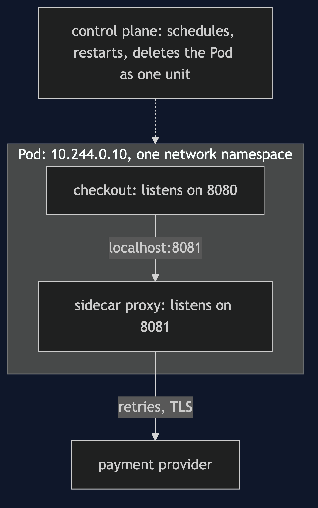
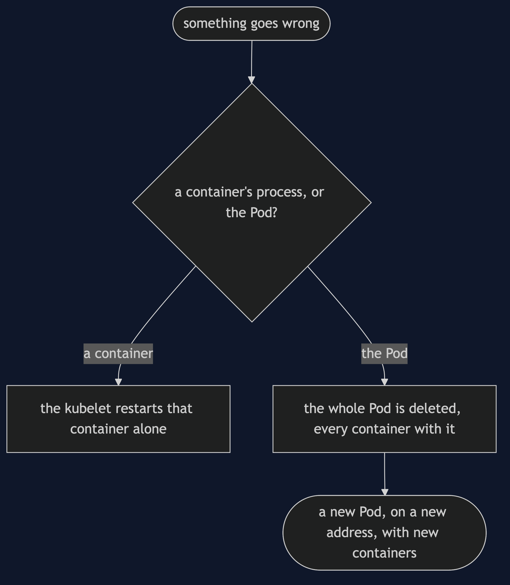
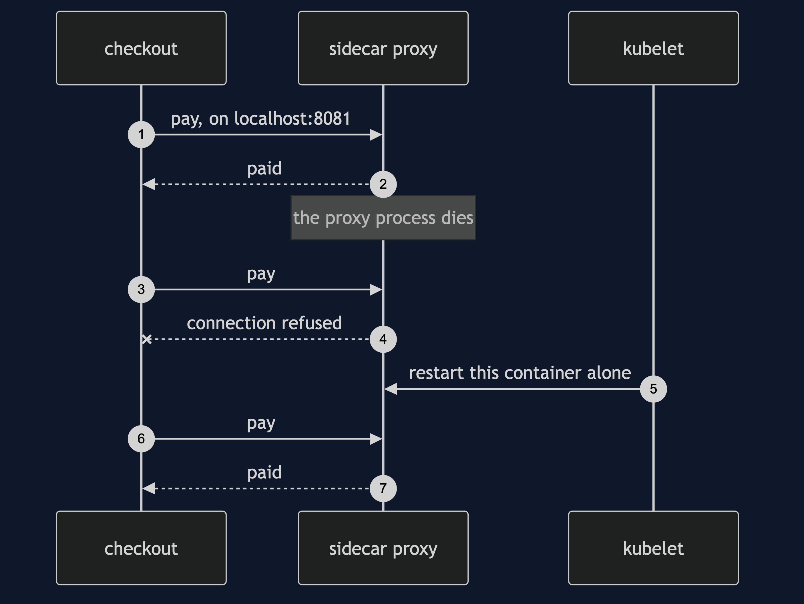
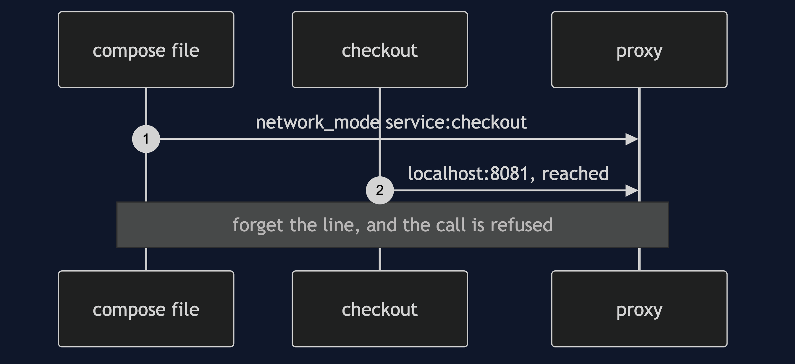
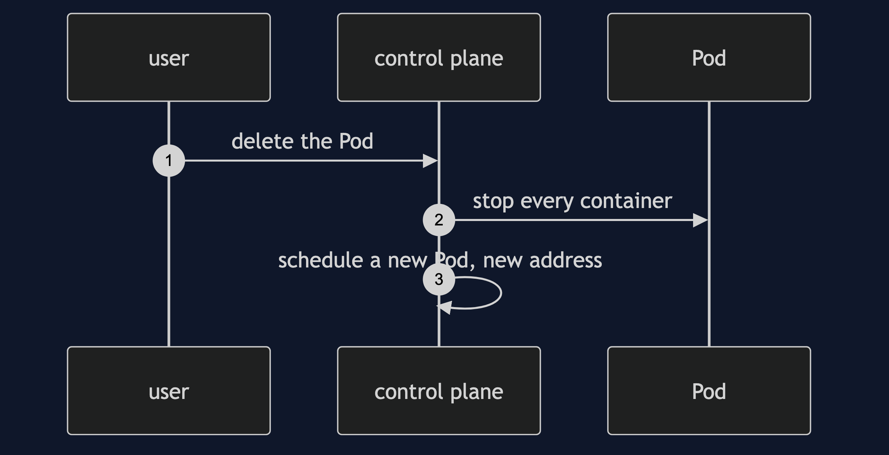
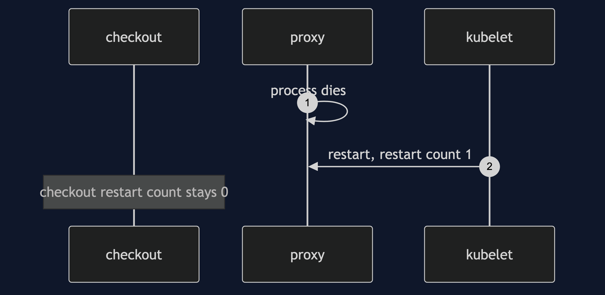
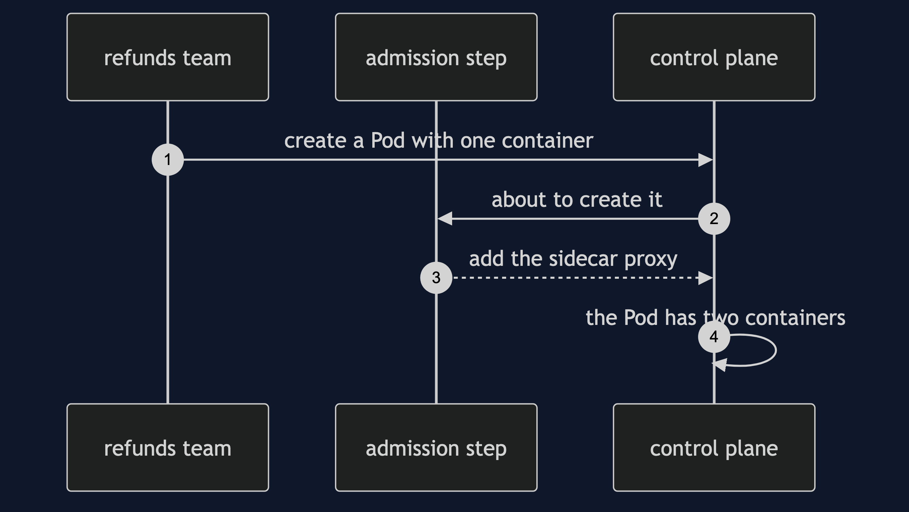

Sidecar on Kubernetes Pattern
src/main/java/com/jk/explore/sidecarkubernetes/
├── PodDemo.java composition root — the six acts
│
├── PodSpec.java ContainerSpec.java a manifest: what somebody wrote, immutable
├── Cluster.java a control plane in about twenty lines: schedule, delete, restart
├── Pod.java Container.java containers that share a network namespace and a fate
├── NetworkNamespace.java one set of ports, one loopback
├── Compose.java the comparison: sharing only when the file says so
├── Injector.java the sidecar arrives beside a manifest that never mentions it
└── ServiceCall.java the checkout's one call, to localhost:8081A Pod is two or more containers that share one network and one fate. That is where sidecars live, and it is a guarantee rather than a configuration line.
This is the third of three Sidecar projects, and the one that shows where sidecars actually live. Read sidecar-pattern first: it explains what a sidecar is and why the retry code left the service. sidecar-java-proxy-pattern is the second. This project takes the same two containers and asks what changes when the thing that runs them is Kubernetes. It is the heaviest dependency in the course, so docs/dependencies.md explains Kubernetes before anything uses it, and skipping this project loses none of the pattern.
Run
./gradlew runSix acts. Tier 1: a plain-Java model of what a Pod guarantees, contrasted with Docker Compose. Nothing here starts a container. The real cluster, kind, is in real/, and is optional.
SIDECAR ON KUBERNETES — two containers, one Pod
ONE. Shared by configuration, or shared by definition.
Compose, with network_mode: service:checkout: checkout reaches localhost:8081: true
Compose, with that one line forgotten: checkout reaches localhost:8081: false
a Pod: checkout reaches localhost:8081: true. there is no line to forget.
both containers are on 10.244.0.10, one network, because that is what a Pod is.
TWO. One lifecycle.
Compose: checkout stopped. the proxy is still running: true.
Pod: deleted. checkout running: false, proxy running: false. they go together.
the replacement is a new Pod on a new address (10.244.0.10 became 10.244.0.11), with both containers new.
THREE. Restarts, however, are per container.
the proxy's process dies. the Pod is 1/2. a payment now: connection refused on localhost:8081
the kubelet restarts the proxy alone. Pod 2/2, proxy restarts 1, checkout restarts 0.
a payment now: paid, through the proxy
the service was not touched, and its calls failed for the gap. a crash does not take a neighbour with it.
what is shared is the Pod: scheduling, eviction and deletion, not process death.
FOUR. Injection.
the manifest the refunds team wrote lists 1 container: [refunds]
the Pod that was created lists 2: [refunds, sidecar-proxy]
the authored manifest is unchanged: true. the sidecar arrived from outside.
that is the mechanism a service mesh is built on: every Pod gets a proxy, and no team wrote it.
FIVE. READY 2/2, and the start-up race.
kubectl get pods: checkout READY 2/2 one logical service, two containers.
with the proxy down it reads 1/2, and the Pod is ready for traffic: false.
containers started together, in manifest order: [checkout, sidecar-proxy]. the service can start, and call the proxy, before the proxy is listening.
a native sidecar starts first: [sidecar-proxy, checkout]. the ordering problem is gone.
SIX. The bill, and the honest question.
everything the Compose version cost, plus a cluster: a scheduler, a control plane,
a YAML dialect and a networking model, added to a shop that worked with two containers and a file.
do you need Kubernetes yet? for four services: almost certainly not. for a fleet: this is the bargain.
what this model does not show: a real scheduler, real restarts with back-off, a control plane that fails.
where you have met this: every Pod in every cluster, and every service mesh's injected proxy.Test
./gradlew test2 test classes, 10 test methods, offline, offline, with no cluster and no Docker.
Technologies and versions
| What | Version | Why it is here |
|---|---|---|
| Java | 21 | The repository standard, via the Gradle toolchain block |
| Gradle | 9.2.1 | The wrapper in this directory; no separate install needed |
| JUnit 5 | 5.10.2 | Test runner |
No framework. A hand-built project stays plain Java so the mechanism is the whole lesson.
Learning Material
| Document | What it covers |
|---|---|
docs/problem-statement.md | The same two containers, and what changes |
docs/sidecar-on-kubernetes-pattern-explained.md | Four guarantees, one correction, the bill, and what the model does not show |
docs/class-diagram.md | The types |
docs/architecture-diagram.md | Two containers in one Pod |
docs/data-flow-diagram.md | A container dying, and a Pod being deleted |
docs/sequence-diagram.md | Written for a listener with the screen off |
docs/uml-diagram.md | Four sequences |
docs/animation.html | The six acts in a browser |
docs/prerequisites.md | What you need to know |
docs/session.md | A one-hour taught session |
docs/spec.md | The generated specification |
docs/youtube.md | Title, description and chapters |
The pattern in one picture

Where each piece sits

How one request moves

Who calls whom, in order

All four sequences




Video
Built from video/scenes.py by video/build_video.sh. The rendered file is not committed; see the repository README for why.
Tier 2: a real cluster
real/ runs the same two containers as a Pod on a real kind cluster, reusing sidecar-pattern's images and nginx template. It is optional, it is not on the path of ./gradlew test, and real/README.md holds the transcript, captured from a real run. It confirms what Tier 1 claims, including the correction: a crash restarts only the container that died.
cd real && ./demo.sh # creates the cluster, runs six acts, deletes the clusterWhere you have already met this
Every Pod in every cluster, and the proxy a service mesh injects beside your service.
When this is too much
For four services, or one team, Compose is cheaper, faster to start, and has fewer ways to fail.
Where this sits
This is the third of three Sidecar projects. Read Sidecar first, and see Sidecar with a Java proxy.